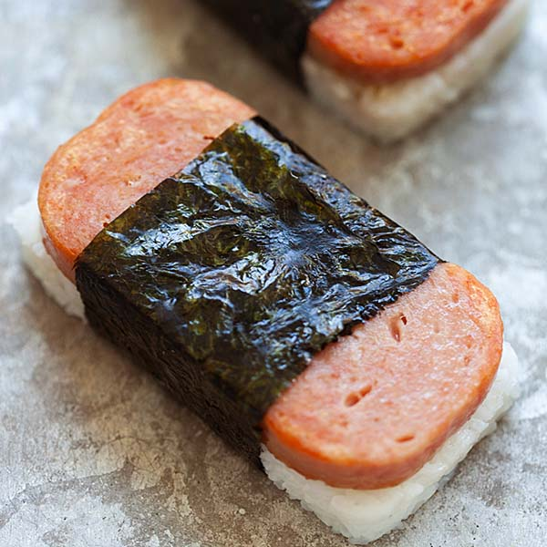

Recipes
Spam Masubi

Description
Spam Masubi is a Hawaiian reiteration of a type of sushi. The snack contains spam and white rice that is wrapped around seaweed. Many ingredients can be added to this snack which is based on yours or the cook's personal preference.
Ingredients
- 2 cups of uncooked short-grain white rice
- 2 cups of water
- 6 tablespoons of rice vinegar
- 1/4 cup of soy sauce
- 1/4 cup of oyster sauce
- 1/2 cup of white sugar
- 12 ounce container of fully cooked Spam
- 5 sheets of dry seeweed
- 2 tablespoons of vegetable oil
Steps
- Soak uncooked rice for 4 hours;drain and rinse
- In a saucepan, bring 2 cups of water to a boil. Add rice and stir. Reduce heat, cover, and simmer for 20 minutes. Stir in rice vinegar, and set aside to cool.
- In a seprate bowl, stir together soy sauce, oyster sauce, and sugar until sugar is completely dissolved. Slice spam lengthwise into 10 slices, or to desired thickness, and marinate in sauce for 5 minutes.
- In a large skilled, heat oil over medium high heat. Cook slices for 2 minutes per side, or until lightly browned. Cut nori sheets in half and lay on a flat work surface. Place a rice press in the center of the sheet, and press rice tightly inside. Top with a slice of spam, and remove press. Wrap seaweed around rice mold, sealing edges with a small amount of water. (Rice may also be formed by hand in the shape of the meat slices, 9 inch thick.) Musubi may be served warm or chilled.
Kimchi Fried Rice

Description
Kimchi fried rice is exactly what you were thinking.Fried Rice with Kimch. Kimchee fried rice is a popular Korean dish.
Ingredients
- 3 tablespoons of unsalted butter
- 1/2 small onion, medium dice
- 1 cup roughly chopped kimchi (6 ounces)
- 2 tablespoons of kimchi juice
- 1/2 cup of small-dice spam
- 2 cups of cooked rice
- 2 teaspoons of soy sauce
- 1 teaspoons of sesame oil
- 2 tablespoons of vegetable oil
- 2 eggs
- Furikaki
Steps
- In a nonstick saute pan or well-seasoned cast-iron skillet, melt butter over medium-low heat, and add onions. Cook, stirring, until the onions start to sizzle, about 2 minutes. Add kimchi and kimchi juice, and stir until it comes to a boil, about 3 minutes. Add spam, and cook sauce until it is nearly dried out for about 5 minutes.
- Break up the rice in the pan with a spatula, and stir it to incorporate. Turn heat to medium. Cook, stirring, until the rice has absorbed the sauce and is very hot, about 5 minutes. Stir in soy sauce and sesame oil. Taste, and adjust with more soy sauce, sesame oil or kimchi juice. Turn heat down slightly, but let the rice continue to cook, untouched, to lightly brown while you cook the eggs.
- Place a small nonstick sauté pan over medium heat, and add the vegetable oil. When it is hot, add eggs, season with salt and fry to your desired doneness. Serve rice topped with fried eggs, and sprinkle some Furikaki on top.
Pho

Description
Pho is a popular Vietnamese dish.
Ingredients
- 5 pounds of beef knuckle, with meat
- 2 pounds of beef oxtail
- 1 sliced white radish
- 2 onions chopped
- 2 ounces whole star anise pods
- 1/2 cinnamon stick
- 2 whole cloves
- 1 tablespoon of black peppercorns
- 1 sliced fresh ginger root
- 1 tablespoon of white sugar
- 1 tablespoon of sale
- 1 tablespoon of fish sauce
- 1 1/2 pounds of dried flat rice noodles
- 1/2 pound of frozen beef sirloin
- Sriracha hot pepper sauce
- Hoisin sauce
- Thinly sliced onion
- chopped fresh cilantro
- Bean Sprouts (mung beans)
- Sweet Thai Basil
- Thinly sliced green onion
- Limes, quartered
Steps
- Skim fat from the surface of the soup, and add the oxtail, radish and onions. Tie the anise pods, cinnamon stick, cloves, peppercorns and ginger in a cheesecloth or place in a spice bag; add to the soup. Stir in sugar, salt and fish sauce. Simmer over medium-low heat for at least 4 more hours (the longer, the better). At the end of cooking, taste, and add salt as needed. Strain broth, and return to the pot to keep at a simmer. Discard spices and bones. Reserve meat from the beef knuckle for other uses if desired.
- Bring a large pot of lightly salted water to a boil. Soak the rice noodles in water for about 20 minutes, then cook in boiling water until soft, but not mushy, about 5 minutes. Slice the frozen beef paper thin. The meat must be thin enough to cook instantly.
- Place some noodles into each bowl, and top with a few raw beef slices. Ladle boiling broth over the beef and noodles in the bowl. Serve with hoisin sauce and Sriracha sauce on the side. Set onion, cilantro, bean sprouts, basil, green onions, and lime out at the table for individuals to add toppings to their liking.